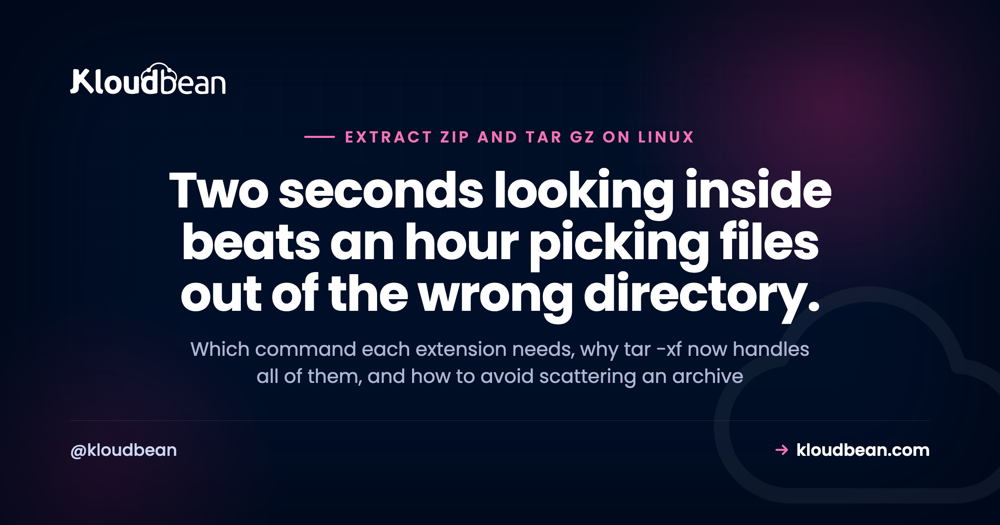

Unzip a Zip File on Linux, and Every Other Archive You Will Meet

The hard part of extracting an archive on Linux is not the command. It is that there are half a dozen formats with overlapping names, the tool depends on the extension, and the flags you find in old tutorials are mostly no longer necessary. Meanwhile the one habit that genuinely matters on a server, looking inside before you extract, gets left out of every tutorial. So this is a reference organised by what you are actually holding, plus the two or three things that go wrong when you run these commands somewhere that matters.
For a .zip, use unzip archive.zip, installing the unzip package first if the command is missing, which it often is on a minimal server. For anything with tar in the name, including .tar.gz, .tar.bz2 and .tar.xz, use tar -xf archive.tar.gz. Modern tar works out the compression on its own, so the z and j flags people memorise are not needed for extraction. A bare .gz is a single compressed file rather than an archive, so it wants gunzip. And before extracting anything on a server, list the contents first, because an archive with no top-level folder will empty itself into your current directory.
Find your extension, get your command
Start here. The extension tells you the tool, and almost every question in this area is really this table.
| File | Command | What it is |
|---|---|---|
.zip | unzip file.zip | Archive plus compression in one format |
.tar | tar -xf file.tar | Archive only, no compression |
.tar.gz or .tgz | tar -xf file.tar.gz | Tar archive, gzip compressed. The most common thing you will meet |
.tar.bz2 or .tbz2 | tar -xf file.tar.bz2 | Tar, bzip2 compressed. Smaller, slower |
.tar.xz or .txz | tar -xf file.tar.xz | Tar, xz compressed. Smallest, slowest |
.gz alone | gunzip file.gz | Not an archive. One compressed file |
.bz2 alone | bunzip2 file.bz2 | Same idea, one file |
.7z | 7z x file.7z | Needs p7zip installed |
.rar | unrar x file.rar | Needs unrar installed |
Two rows in that table cause most of the confusion.
A bare .gz is one file, not a folder of them. gzip compresses a single file and nothing else. So there is no such thing as unzipping a .gz into a directory, and unzip will refuse it because it is the wrong format entirely. Run gunzip data.sql.gz and you get data.sql back. That is also why database dumps arrive this way, and why gunzip -c is handy: it writes to standard output so you can pipe a dump straight into a client without landing a huge file on disk first.
.tar.gz is two steps stacked. tar collects files into one, gzip squeezes the result. The double extension is describing both operations in order, which is why the name looks redundant and is not.
You can stop memorising the tar flags
Here is the part most tutorials are years out of date on.
Every guide teaches a different flag per compression type: -z for gzip, -j for bzip2, -J for xz. People memorise tar -xzf as a unit and then get stuck the first time they meet a .tar.xz. Modern tar reads the file, works out how it is compressed, and handles it. So for extraction you need exactly one command:
# Works for .tar, .tar.gz, .tar.bz2, .tar.xz. All of them.
tar -xf archive.tar.gz
# Add -v if you want to watch it, since tar is silent by default
tar -xvf archive.tar.gz
# Extract somewhere other than here, and make sure the directory exists first
mkdir -p /var/www/release && tar -xf archive.tar.gz -C /var/www/releaseOne important asymmetry, and it is where people get caught. Auto-detection applies to reading, not writing. When you create an archive you must say which compression you want, because tar cannot infer your intent from a filename:
# WRONG: names it .tar.gz but produces an uncompressed tar
tar -cf site.tar.gz /var/www/site
# RIGHT: -z actually applies gzip
tar -czf site.tar.gz /var/www/siteThat first command is a genuinely common mistake and it fails silently. You get a file called .tar.gz that is not compressed, it is several times larger than expected, and everything still extracts fine, so nothing tells you. Worth checking with file site.tar.gz, which will say POSIX tar archive rather than gzip compressed data.
If you are on a system with an unfamiliar tar build and want to be sure what it accepts, tar --help is faster than guessing.
Look inside first. This is the habit that matters
The one part of this page that will actually save you an afternoon.
A well-made archive contains a single top-level directory, so extracting it creates one tidy folder. A badly made one contains its files at the root, so extracting it dumps all of them straight into wherever you happen to be standing. That is a tarbomb, and it is unpleasant on a laptop and genuinely bad on a server, because you may have just mixed four hundred files into a directory that already had real content in it. There is no undo, and no error was raised, because nothing went wrong as far as tar is concerned.
The check costs one second:
# tar: list without extracting
tar -tf archive.tar.gz | head -20
# zip: same idea
unzip -l archive.zip | head -20
# How many distinct top-level entries? If this is not 1, be careful.
tar -tf archive.tar.gz | cut -d/ -f1 | sort -uThat last command is the one to keep. If it prints a single name, extract wherever you like. If it prints a list, extract into a new empty directory with -C, or unpack in a scratch location and move what you want. Also worth glancing at the listing for paths starting with / or containing ../, which can write outside your target directory. Rare, and firmly in the do-not-run category if the archive came from somewhere you do not trust.
unzip is a separate package and minimal server images routinely omit it. Install it with sudo apt install unzip on Debian and Ubuntu, or sudo dnf install unzip on the RHEL family. tar is almost always present, which is a decent reason to prefer tar archives for anything you will unpack on a server.
Creating archives, and the flags you do need
Going the other way, briefly, since tar to tar.gz is a question people ask.
# Create a gzip-compressed archive of a directory
tar -czf backup.tar.gz /var/www/site
# Compress an existing plain .tar without unpacking it
gzip archive.tar # produces archive.tar.gz, removes the original
gzip -k archive.tar # keep the original too
# Exclude the things you never want in a deploy artefact
tar -czf release.tar.gz --exclude='node_modules' --exclude='.git' .
# Make a zip instead, for someone on Windows
zip -r site.zip site/Which compression to pick, briefly. gzip is fast and universally available, and it is the right default. xz produces noticeably smaller files and takes considerably longer, which pays off for something written once and downloaded often, and does not pay off for a nightly backup. bzip2 sits in between and has largely been displaced by xz. If you have no particular reason, use gzip.
One note if you are using tar for backups: an archive on the same disk as the thing it backs up is not a backup. The backups guide covers where it needs to go and the restore test that proves it worked, and S3-compatible object storage is the usual destination.
So how do I install a tar.gz file?
A common question with a slightly unwelcome answer: a .tar.gz is not an installer. It is a container, and what is inside decides what happens next.
Extract it and look:
tar -xf thing.tar.gz && cd thing-1.2.3 && ls| What you find | What it is | What to do |
|---|---|---|
| A single executable file | A precompiled binary | Move it onto your path, for example sudo mv thing /usr/local/bin/ |
configure, Makefile.in | Source code, the classic build | ./configure && make && sudo make install |
An install.sh or INSTALL file | The author left instructions | Read them before running them |
package.json, requirements.txt | An application, not a system package | Use npm or pip, not a manual install |
A .deb or .rpm inside | A real package that was merely shipped in a tarball | sudo apt install ./thing.deb |
Now the opinion, because this question usually deserves one. On a server, installing from a tarball should be a last resort. Software installed that way sits outside your package manager entirely, which means it will not be upgraded when you patch the system, it will not be flagged when a vulnerability is published against it, and in six months nobody will remember it is there or which version it is. A make install also scatters files across your filesystem with no manifest, so removing it cleanly is guesswork.
So check for a package first. Nearly always there is one:
apt search thing # Debian, Ubuntu
dnf search thing # RHEL family
# Not sure which you are on?
cat /etc/os-releaseIf you are unsure what your server actually runs, identifying your distribution and release covers it, and it matters here because the package name and the manager both depend on the answer. Use a tarball when there is genuinely no package, when you need a version newer than the repository carries, or when the vendor ships only that. Otherwise let the package manager keep track for you.
The parts that only bite on a server
Extracting as root hands the archive your permissions. tar preserves ownership and permission bits from inside the archive when run as root, so a file that was owned by user 1001 on someone else's machine arrives owned by whatever local account has that number. Then your web server cannot read it, or worse, can write it. Extract as the owning user where you can, or tell tar not to:
tar -xf release.tar.gz --no-same-owner --no-same-permissionsYou need room for both. Extracting a 2 GB compressed archive means the archive and its contents coexist until you delete one, and compressed content can expand many times over. Check before you start, because filling a production disk causes considerably more trouble than a failed extraction:
df -h .
# Uncompressed size, without extracting anything
tar -tvf archive.tar.gz | awk '{s+=$3} END {print s/1024/1024 " MB"}'tar tells you nothing while it works. On a large archive over a slow disk that reads as a hang. Add -v for filenames, or pipe through pv if it is installed, and resist the urge to interrupt a half-finished extraction into a live directory.
Do not trust an archive you did not make. The listing check above is the whole defence, and it is worth doing on anything downloaded rather than built.
The part that is not your code
These are standard Linux tools and they work identically everywhere. There is nothing to buy here.
Where the platform touches this is the reason the tarball question came up. On Kloudbean the stack is managed and patched, which is exactly the guarantee a manual make install steps outside of, so keeping installs inside the package manager is what lets the patching cover them. Deploying from a Git repository, with builds and live logs in the console, removes most reasons to be shipping tarballs to a server by hand at all. Application and server logs sit in the same dashboard for when an extraction did not go the way you expected, and S3-compatible object storage gives your archives somewhere to live that is not the disk they came from. Automatic backups mean a bad extraction in the wrong directory has a recovery path. Seven cloud providers, and free migration assistance if you are moving.
The boundary is unchanged. TLS, patching, backups and the stack itself are handled for you. What you extract, and where you point it, stays yours.
Same neighbourhood
On getting files onto the server before any of this, FTP versus SFTP. If tar is doing backup duty, the server backups guide and S3-compatible object storage for where they belong. For the package-manager question, identifying your distribution and release. To stop shipping archives by hand, auto-deploy from GitHub. And if a deploy went in and the app then failed to start, 503 after deploying.
Ship the app, not the infrastructure.
Servers, managed databases, object storage, and a built-in load balancer live behind one login, on the cloud and region you pick. The stack, SSL, patching, and backups are handled for you.
- ✓ Seven cloud providers
- ✓ Managed databases
- ✓ Object storage
- ✓ Automatic backups
- ✓ Free SSL
- ✓ Git deploy
- ✓ Free migration assistance
Plans from $8/mo · Free migration assistance · Free trial
FAQ
How do I unzip a zip file in Linux?
Run unzip file.zip in the directory where you want the contents. If the command is not found, install it first with sudo apt install unzip on Debian or Ubuntu, or sudo dnf install unzip on the RHEL family, because it is a separate package that minimal server images often leave out. Use unzip -d target/ to extract somewhere specific.
How do I extract a tar.gz file in Linux?
Use tar -xf file.tar.gz. You do not need the -z flag any more, because modern tar detects the compression itself, so the same command also works for .tar.bz2 and .tar.xz. Add -v to see filenames as it goes, and -C to extract into a different directory.
What is the difference between .gz and .tar.gz?
A bare .gz is a single compressed file, not an archive, so there is nothing to unpack into a directory and you use gunzip on it. A .tar.gz is two operations stacked: tar collected many files into one, then gzip compressed the result. That is why the double extension is not redundant.
Why does unzip not work on my .gz file?
Because they are unrelated formats. unzip handles the zip format, and gzip is something different, so the tool correctly refuses the file. Use gunzip file.gz, or tar -xf if the name is actually .tar.gz rather than a bare .gz.
How do I see what is inside an archive before extracting it?
Use tar -tf archive.tar.gz for tar files or unzip -l archive.zip for zip files. This is worth doing every time on a server, because an archive with no single top-level directory will scatter its contents into your current directory with no error and no way to undo it. Piping the listing through cut -d/ -f1 and sort -u tells you how many top-level entries there are.
How do I install a tar.gz file in Linux?
You do not install a tar.gz, you extract it and then deal with whatever is inside. That might be a binary you move onto your path, source code you build with configure and make, or an application that should be installed with npm or pip instead. On a server, check for a proper package first with apt search or dnf search, because software installed from a tarball sits outside your package manager and never gets patched.
How do I convert a tar file to tar.gz?
Run gzip archive.tar, which produces archive.tar.gz and removes the original. Add -k if you want to keep the uncompressed version as well. If you are creating the archive from scratch, tar -czf archive.tar.gz directory/ does both steps at once.
Why is my .tar.gz file not actually compressed?
Almost certainly because it was created with tar -cf rather than tar -czf. Auto-detection applies only to extracting, so when creating an archive you must specify the compression, and tar will not infer it from the filename you chose. Check with file archive.tar.gz: it will report a POSIX tar archive rather than gzip compressed data.
Which compression format should I use?
gzip unless you have a specific reason otherwise. It is fast and available everywhere, which makes it the right default for backups and deploy artefacts. xz produces noticeably smaller files at a significant cost in time, which is worth it for something compressed once and downloaded many times. bzip2 sits in between and has largely been superseded.